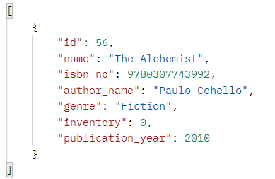

This is a documentation of the API routes for managing the library resources efficiently!
> GET /books
->Will Retrieve all the book records of the library
Response Body
> POST /books
-> Will create a new record
Request Body
Response Body
> DELETE /books
-> Will delete all the book records
Response Body
> GET /books/find_book_needed/<integer: n>
-> Will retrieve all the books which are less than ‘n’ in inventory
Response Body
> GET /books/unavailable_books
-> Will retrieve the books which are 0 in the inventory
Response Body

> GET /book/<isbn_no>
-> Will retrieve the record of a single book with the given isbn_no
Response Body
> PUT /book/<isbn_no>
-> Will Replace the records of the book with the given isbn_no
Request Body
Response Body
> PATCH /book/<isbn_no>
-> Will Update the records of the book with the given isbn_no
Request Body
Response Body
> DELETE /book/<isbn_no>
-> Will Delete the records of the book with the given isbn_no
Response Body
> GET /book/issue_book/<isbn_no>
-> Will issue the book, i.e. decrease the book by one from the inventory
Response Body